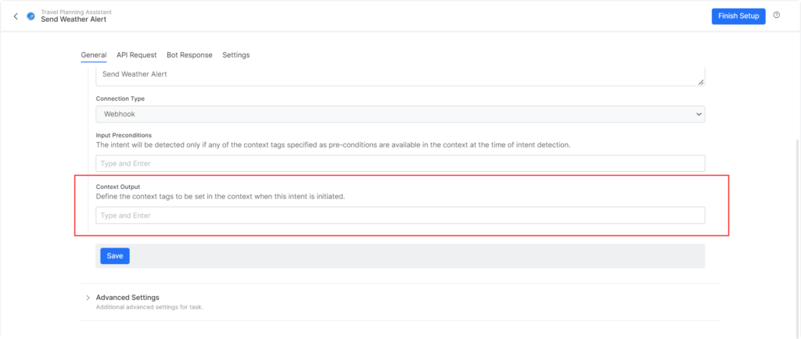
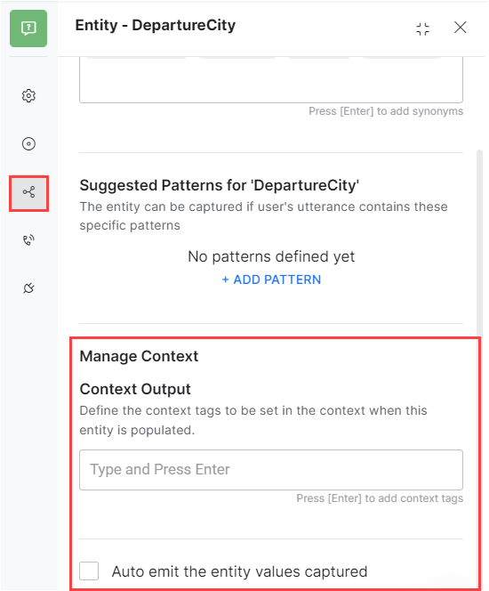
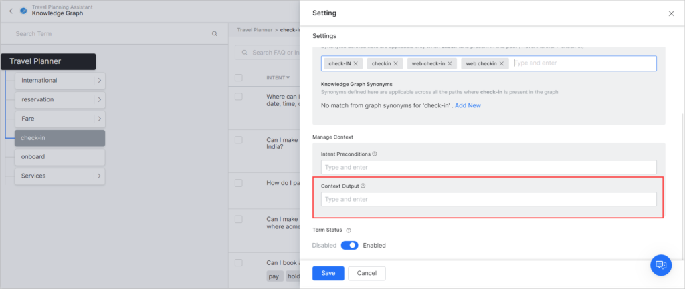
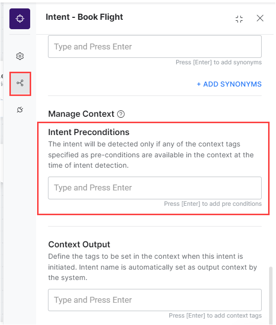
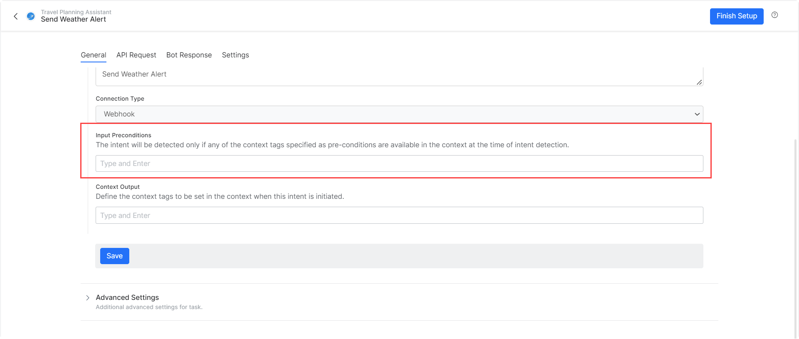
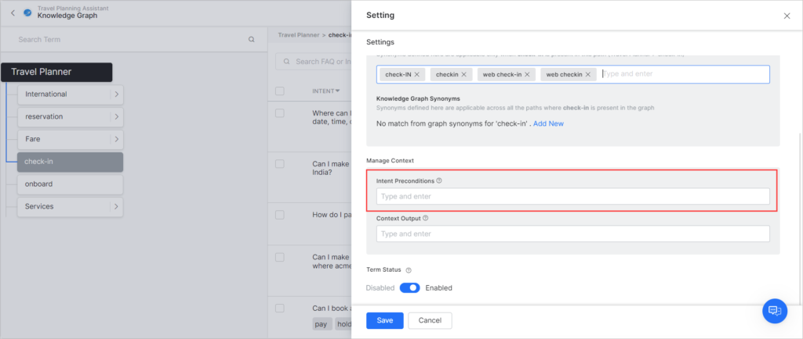
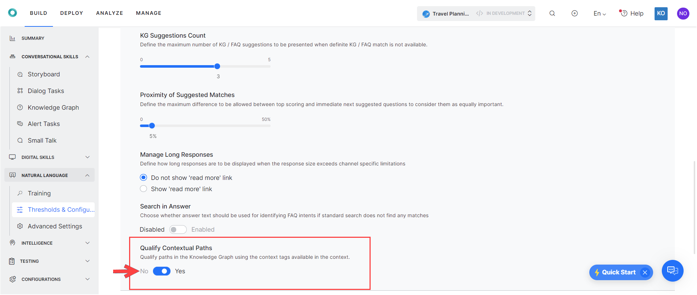

Context Management¶
Effective context management is important because it allows Virtual Assistants to interact with users in a way that is easier, quicker, more helpful, and less robotic and scripted. Contextual data helps users complete tasks faster and allows you to create more natural, human-like back and forth conversations.
For example, let us consider the following conversation:
Example
User: What is the cost of an Economy flight ticket from London to Paris on Aug 15, 2022?
VA: It's €242.
User: Great! I would like to book it.
In the above conversation, the booking is in the context of an economy flight on Aug. 15, 2022. The VA should not be asking the user whether they would like to book a flight or a hotel; what their departure and destination cities are or when they want to fly.
The context from the previous intent should already be available to the VA, so it can handle the intent according to the existing contextual data.
The XO Platform allows you to capture and reuse contextual data for a large variety of scenarios, so you can create more complex use cases and redefine the enterprise customer experience. The following are examples of a few such scenarios:
- Sharing context across intents, FAQs: As seen from the above example, maintaining context for all intents i.e. dialog tasks, FAQs, makes it easy to customize the user experience
- Context-driven FAQs: Certain intents (tasks or FAQs) can be made available only when certain other intents (tasks or FAQs) are in the context. For example, FAQ intent What are the meal options available? should be available only when Book a flight task is in the context.
- Follow-up Intent: Context of the current intent can be used to identify subsequent intents from the user utterances. For example, User utterance what are the extra charges? should be responded with FAQ intent What are the charges for a Premium Economy seat ? if the user’s previous intent was what are the benefits of booking a Premium Economy seat?
- Sharing Entity Values across Intents: Entity values or conversation flows can be driven using the previous intent’s context information. For example, The City Name entity in Check Weather intent can be pre-populated if the user has executed Check Flight Status intent and has provided value for the Destination City entity.
This document talks about the concepts behind the implementation of context management in the XO Platform. For a detailed step-by-step example, click here.
Example
User: When is my flight to Singapore?
VA: Your flight from New York to Singapore is confirmed for Jun 20th.
User: Do I need a Visa?
VA: Yes, you need a visa to visit Singapore for business or tourism?
User: I would like to apply for one.
VA: Sure I can help with a Visa to Singapore. Let me know the duration of the stay.
` To achieve the above conversation, the context object can be used as follows:
- Flight Booking Enquiry emits the destination city entity value.
- Visa FAQ uses the entity value emitted by the Booking Enquiry Intent.
- Visa Application consumes the terms Visa and Singapore from the Visa FAQ.
This article will help you in achieving the above scenario.
Implementation¶
Context management involves the following steps:
- Output Context to define tags that indicate the current intent is executed.
- Intent Preconditions to extract the output context tags for scoping the subsequent intent detection.
- Contextual Intent Detection using context tags to identify the terms/nodes from the FAQs.
- Conversation Flows to customize the flows.
Output Context¶
Context Tags are generated and stored in the context object to be used for managing the assistant’s behavior and user experience. The Platform creates a context object for every user intent, like dialog tasks and FAQs. Learn more.
Default Contexts Tags
Intent names, Entity names, and FAQ Term/Node names are emitted by default.
Custom Context Tags
Additionally, the following can be defined to be included in the Context Object:
- Context Tags – You can add context tags from the NLP settings for Dialog, Action, Alert, Info Tasks, and Entities.
- Entity Value – You set an option to indicate whether entity values captured should be emitted or not for each entity node.
- Use context tags for finding FAQ – You can indicate whether KG paths to be shortlisted using context tags.
Dialog Tasks¶
The Platform supports emitting details of a dialog task when executed by the user:
- The intent name is emitted as a contextual tag for all dialog tasks when the task execution is initiated.
- You can add any additional tags from the NLP Properties tab of the dialog task (you may have to scroll down).
{kind=link}
- You can emit output context tags from any place where JavaScript is written (script node, advanced prompts, run a script option, etc.) using the
contextTags.add(string value).
Alert Tasks¶
The Platform supports emitting details of the alert tasks when executed by the user:
- The task name is emitted as a contextual tag for all alert tasks when the task execution is initiated.
-
You can add any additional tags at the time of task creation under More Options or from the General Settings. 
-
You can also emit output context tags from pre-processors or post-processors using the
contextTags.add(string value).
{kind=link}
Entity¶
Entity values captured from end-users are emitted based on the:
- Auto emit the entity values captured switch. Entity Value Tags will be emitted as shown in the following section.
- You have the option to add any additional tags. 
{kind=link}
Knowledge Graph¶
- The Node/term name is emitted as a contextual tag for all mandatory and optional terms present in the path qualified when a question is answered.
-
You can add any additional tags per term from the Settings page for the term/node. 
-
You can also emit output context tags from advanced prompts using the
contextTags.add(string value).
{kind=link}
Intent Preconditions¶
Intent pre-conditions are used to define the intent detection scope for intents and FAQs. These are a set of conditions that must be fulfilled for the intent/FAQ to be detected and executed.
Dialog Tasks¶
Intent pre-conditions for dialog intents are set to define when a dialog is detected i.e. making a dialog available for detection only when specific tags are available in the context.
-
You can add one or more intent pre-conditions for making a dialog intent available. 
-
Dialog intents with pre-conditions are detected only if the defined pre-conditions are met.
- The intent with a precondition set is treated as a sub-intent and will be part of the Linked Task Exception behavior from the Dialog level Hold and Resume settings.
{kind=link}
Alert Tasks¶
Intent pre-conditions for alert tasks are set to define when a task is detected i.e. making a task available for detection only when specific tags are available in the context.
- You can add one or more intent pre-conditions for making a task intent available.
- Task intents with pre-conditions must be detected only if the defined pre-conditions are met. 
{kind=link}
Knowledge Graph¶
Intent pre-conditions for Knowledge Graph can be associated with terms.
-
You can define intent pre-conditions for any of the terms present in the Knowledge Graph. 
-
Paths that contain terms with pre-conditions are qualified only if the pre-conditions are met.
{kind=link}
Contextual Intent Detection¶
Contextual intent detection helps in detecting relevant intents using the output context set by previously executed intents.
Tasks¶
You can define Rules for identifying contextually relevant intents by using output context tags the same as traits Learn more.
Knowledge Graph¶
The Platform consumes the output context tags and uses them for improving intent detection in the Knowledge Graph engine based on the flag set by the developer. This flag ensures that the context tags are used to qualify paths in the Knowledge Graph. Context tags are used to extract terms and these terms are clubbed with any other terms present in user utterance. The consolidated list of terms is used for qualifying the path.
You can configure this as follows:
- Select the Build tab from the top menu
- From the left menu, click Natural Language > Thresholds & Configurations.
- Click Knowledge Graph.
- Locate Qualify Contextual Paths and set it to Yes. 
{kind=link}
Conversation Flows¶
The context tags available in the context object are used to customize the conversation flows.
These can be used as follows:
- To pre-populate entity values.
- To define transition conditions.
- For custom conversation flow.
The Scripts to access the context tags are:
- From the current context:
context.currentTags.tags - From the previous context:
context.historicTags[0].tags